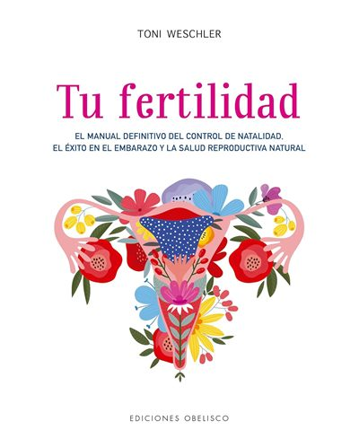

Para ir más lejos
Últimos artículos
Libros recomendados

Tu fertilidad (Salud y vida natural)
Toni Weschler
Una guía para conocer y comprender tu fertilidad, tu ciclo menstrual y las señales de tu cuerpo desde una mirada natural y consciente.
Mamá Slow
Elizabeth González
Un libro sobre nutrición y maternidad que invita a cuidar la alimentación durante esta etapa y a vivirla desde una mirada más consciente y saludable.
Nacemos para no morir nunca
Simone Troisi y Cristiana Paccini
La historia de Chiara Corbella y una profunda reflexión sobre el amor, la maternidad y las pérdidas perinatales, que acompaña con sensibilidad una de las experiencias más difíciles que puede vivir una familia.
Enlaces útiles
Saint Paul VI Institute
El Paul VI Institute para el Estudio de la Reproducción Humana fue fundado en 1985 para responder a la necesidad de una atención de la salud reproductiva que respete plenamente la vida.
FertilityCare Europe
FertilityCare Centres Europe™ es un grupo filial de FertilityCare Centers International. Fue creado para promover el Sistema de Cuidado de la Fertilidad del Modelo Creighton (CrMS) y la NaProTECNOLOGIA en toda Europa.
The American Academy of FertilityCare Professionals
La American Academy of FertilityCare Professionals (AAFCP) es una organización fundada en 1981 que promueve, fomenta y avanza el Modelo Creighton de FertilityCare (CrMS) y la NaProTECNOLOGIA.
Preguntas frecuentes
El protocolo estándar prevé una sesión introductoria y 8 sesiones a lo largo de un año.
Sí. Correctamente seguido, el método Creighton ofrece una tasa de eficacia del 99% para evitar un embarazo, sin hormonas ni dispositivos, siempre que se sigan las instrucciones escrupulosamente.
No, el acompañamiento está dirigido tanto a mujeres solteras como a parejas de novios o matrimonios. No obstante, se anima a implicar al hombre en el aprendizaje.
Las sesiones se ofrecen de forma presencial en Madrid o por videollamada, según tu preferencia y tu lugar de residencia.
El método Creighton se basa en un único biomarcador (moco cervical) observado según una escala estandarizada y enseñada de forma idéntica en todo el mundo. No requiere tomar la temperatura, ni dispositivos, ni tiras de ovulación a diario.
Es el único método natural que cuenta con un abordaje médico para evaluar y tratar los problemas del ciclo femenino, utilizando la gráfica del Modelo Creighton como base para el seguimiento.
No. Es precisamente una de las ventajas del método: funciona igual de bien con ciclos irregulares, post-píldora, en la perimenopausia o después de un aborto espontáneo, porque no se basa en un cálculo de fechas sino en una observación diaria.
Sí. El método Creighton y la NaProTECNOLOGIA son enseñados y practicados por profesionales de la salud formados, dentro de un marco científico estandarizado, utilizado en numerosos países.
No es necesario ser católica para aprender el Modelo Creighton conmigo. Sin embargo, considero importante que todas las personas que realizan el método conozcan la filosofía y los principios morales que orientan su enseñanza.
La PFN (Planificación Familiar Natural) no es un método en sí mismo, sino un término que engloba distintos métodos que no utilizan hormonas, productos químicos ni intervenciones que alteren, controlen, interfieran o interrumpan artificialmente el funcionamiento reproductivo del hombre o de la mujer.
El Método Creighton es un método de PFN, pero además incorpora un componente de monitoreo de la salud reproductiva a través de la NaProTECNOLOGIA.
El Método Creighton también puede utilizarse cuando existen ciclos irregulares o distintas situaciones como la perimenopausia, el período posterior a dejar los anticonceptivos hormonales, la lactancia, el postparto, el SOP, el síndrome premenstrual o ciclos sin ovulación.
De hecho, cuando algo no funciona como esperabas en tu ciclo, el registro puede aportar información.
Hemos comprobado que realizar seguimientos frecuentes al comienzo del aprendizaje ayuda a aprender el sistema de manera más rápida y efectiva.
Puede parecer un poco exigente al principio, pero la gran mayoría de las parejas valora este acompañamiento más intensivo durante las primeras etapas, ya que hay mucha información para aprender y poner en práctica.
La mayoría de las personas adquiere una buena comprensión de los conceptos básicos del registro durante los primeros dos meses.
Sin embargo, si tienes ciclos irregulares o atraviesas diferentes situaciones de salud, puede llevar más tiempo ganar confianza en el método.
Recomendamos que las parejas comprometidas comiencen los seguimientos unos seis meses antes de la boda. De todas formas, podemos acompañarte independientemente del momento en el que te encuentres.
El Modelo Creighton permite identificar los períodos de fertilidad e infertilidad a partir de distintos biomarcadores, principalmente el moco cervical.
No requiere realizar controles internos ni tomar la temperatura. La mujer observa el moco cervical a lo largo del día, como parte de su higiene habitual, y al final del día registra en su gráfica el signo de mayor fertilidad que haya observado.
Las características del moco cervical pueden relacionarse con los cambios hormonales que ocurren antes de la ovulación. Esto permite reconocer cuándo comienza el período fértil y saber que la ovulación se está aproximando.
No utiliza productos químicos, hormonas artificiales ni métodos de barrera, y no tiene efectos secundarios asociados a estos métodos.
Además, favorece la comunicación y permite que la planificación familiar sea una responsabilidad compartida entre los esposos.
La Planificación Familiar Natural todavía no forma parte de la formación médica habitual en muchas instituciones.
A pesar de que estos métodos tienen fundamentos científicos, algunos profesionales pueden no conocer en profundidad cómo funcionan o pueden considerar que a las parejas les resultará difícil utilizarlos de manera efectiva.
Por eso, muchas mujeres llegan a conocerlos recién a través de otras fuentes o profesionales especializados.
Las Practitioners realizan una formación especializada de 13 meses que combina clases teóricas, práctica y acompañamiento bajo supervisión.
Además, existen organizaciones profesionales que establecen estándares y respaldan la formación y la calidad de la enseñanza del Sistema de Cuidado de la Fertilidad del Modelo Creighton.
La fertilidad es cosa de dos. El Método Creighton invita a la pareja a conocer y comprender juntos su fertilidad y a compartir las decisiones sobre planificación familiar.
El hombre también puede involucrarse acompañando a su pareja a los seguimientos, aprendiendo a interpretar las gráficas y participando activamente en el proceso.
El programa completo cuenta con 8 sesiones de seguimiento a lo largo de un año, después de la sesión de introducción: las 4 primeras cada 2 semanas, después en la semana 12, y finalmente cada 3 meses. Pasado un año, un seguimiento cada 6 a 12 meses suele ser suficiente.
Las sesiones no están cubiertas por las mutuas.
Las sesiones se pagan por transferencia bancaria al menos 24h antes para confirmar la cita. En caso de sesión en línea, la gráfica debe enviarse por email 24h antes.
Sí, sigo disponible por mensaje durante todo el seguimiento para responder a tus preguntas entre citas. Este servicio está incluido en el precio de los packs.
Presencial en Madrid o por videollamada, según tu preferencia y tu lugar de residencia. También puedes alternar ambos formatos.
No, el acompañamiento a distancia funciona igual de bien que el presencial, solo hay que tener en cuenta la diferencia horaria para organizar las sesiones.
En español, en francés o en inglés, según la demanda.
Respondo a cada solicitud en un plazo de 48h laborables para acordar juntas una primera llamada.
Por transferencia bancaria o PayPal, a abonar al menos 24h antes de cada sesión para confirmarla. Los datos bancarios se envían después de tu solicitud.